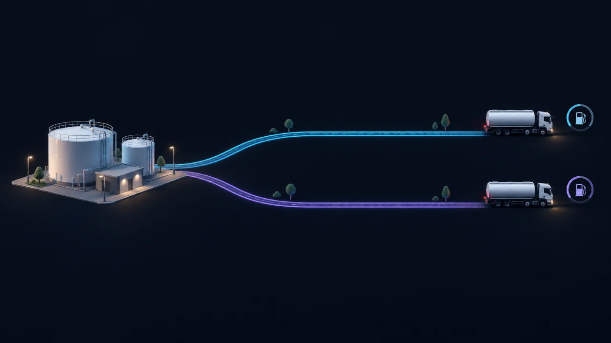
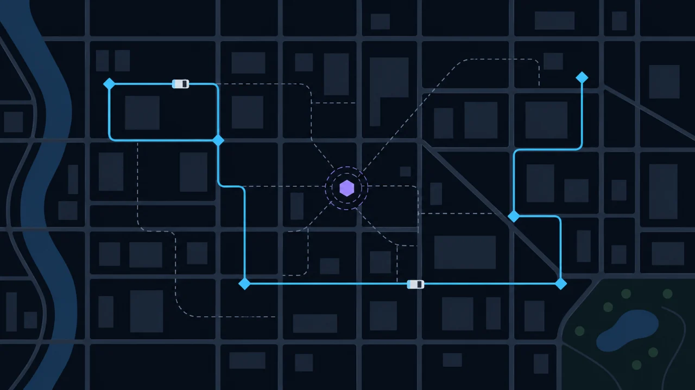
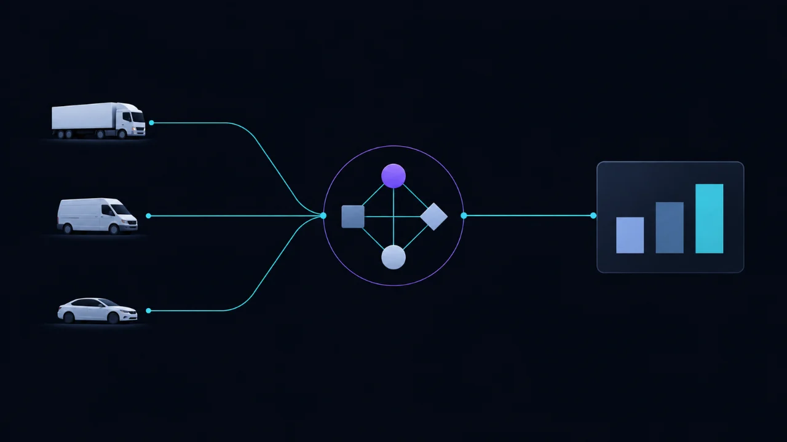
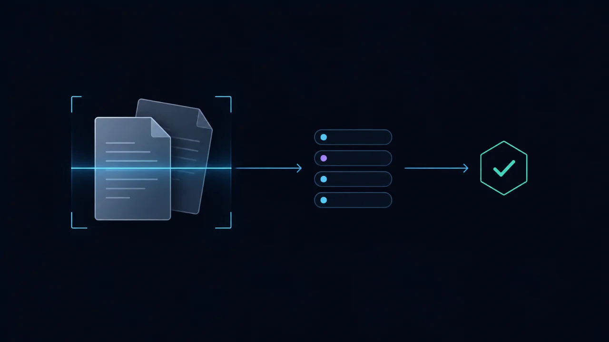

Abierto a oportunidades
Sergio Anaya Sánchez
Científico de Datos | Arquitectura Cloud & Optimización
Transformando datos complejos en soluciones escalables y valor de negocio tangible.
Transformando datos complejos en soluciones escalables y valor de negocio tangible.
Arquitecturas de datos y microservicios. Haz clic para ver el diagrama.

Sistema que combina RCT, modelo Logit, inferencia causal (ATE/CATE) y Thompson Sampling para reducir robo de diesel en operaciones de flota. Ciclo virtuoso: experimentación → predicción → causalidad → optimización.
Ver Arquitectura
Librería híbrida de metaheurísticas para VRP. Aceleración 50x vs Python puro usando bindings de Rust y paralelismo CUDA.
Ver en GitHub
Visión de Negocio: Transformación de telemetría vehicular en un producto de valor agregado con trazabilidad total, reduciendo la carga operativa del equipo de monitoreo.
Implementación: Arquitectura orientada a eventos para procesar flujos de datos en tiempo real y proporcionar información crítica de las unidades.

Ecosistema de automatización documental. Extracción OCR/NLP para auditoría comercial y compliance normativo.
Ver ArquitecturaVisualización de KPIs operativos en tiempo real. Stack: SQL, Polars, Looker/Streamlit.
¿Interesado en colaborar o discutir sobre datos y arquitectura? Encuéntrame en mis redes.